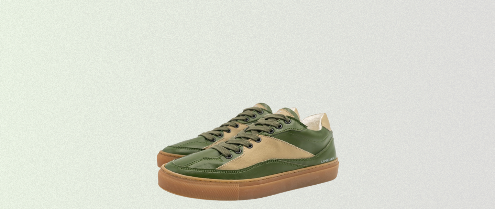

Sneakers which will change your next step making it more sustainable, animal friendly, conscious

We realize quite well that shoes are one of the most consumed products within the industry of fashion, which means volumes can be important, which is a big social responsibility.
 The Juarez sneaker model features certified sustainable materials
The Juarez sneaker model features certified sustainable materials